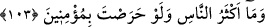

verdiğine göre bunun kendisinden kaynaklanan bir şey olmayıp vahiy ile ortaya çıktığı
konusunda hiç şüphe kalmamıştır.
Ancak böyle olduğu halde hâlâ inkâr edenlerle alay edilerek şöyle denilmiş
olmaktadır: Ey inatçı münkirler! Siz de biliyorsunuz ki O, hiç kimseden bir şey
duymamış, kimseden okumamış ve geçmiş milletlerden hiçbirini ne görmüş ne de
yanlarında bulunmuştur!”
Rivâyet edilir ki Kureyş kâfirleri ile bir grup yahudi, kendisini sıkıntıya sokmak için
Hz. Peygamber (a.s.)’a Yûsuf kıssasını sordular. O da kıssayı Tevrat’takine uygun bir
şekilde haber verince yine müslüman olmadılar. Bu durumun Hz. Peygamber’i üzmesi
üzerine Cenab-ı Hak kendisini tesellî ederek şöyle buyurdu:
103. Sen ne kadar istesen de insanların çoğu îman edecek değildir.
“Sen ne kadar istesen” inanmaları için ne kadar arzulu olsan, kendilerine ne kadar
delil getirsen “de yine insanların çoğu” inatları ve inkârda karar kılmaları yüzünden
“îman edecek değildir.” Bu âyet, Mekkelilere de başkalarına da şâmildir.
Mekkeli münkirlerin inkârda ısrârı, esasen kader sırlarından biridir. Çünkü bu,
onların yaratılmadan önceki ezelî istîdâdlarının gereklerinden ve a‘yân-ı sâbitelerinin/
İlâhî ilimde sâbit olan hâllerindendir.
“Peki öyleyse, bunun olmayacağı bilindiği halde emredilip mükellef tutulmasının ne
faydası vardır?” diye sorulursa, şöyle cevap veririm: Bunun faydası, buna istîdâdı
olanların ayrılarak gerek saâdet ve şakâvetin, gerekse bunlara lâyık olanların ortaya
çıkmasıdır.
“Allah Teâlâ, yarattıklarını kendisine kulluk etsinler diye yaratmasına rağmen niçin
kâfirler daha fazla?” diye sorulursa deriz ki: Maksad, insân-ı kâmilin zuhûr etmesidir.
O, bin gibi olan birdir.
104. Halbuki sen buna karşılık onlardan hiçbir ücret istemiyorsun. O (Kur’an)
âlemler için ancak bir öğüttür.
“Halbuki sen buna” yani peygamberlik veya Kur’ân ile irşâd etmene “karşılık
onlardan hiçbir ücret istemiyorsun.” Sana verecekleri bir maddî karşılık talep
etmiyorsun. Oysa haberciler, ücret isterler.
Bu ifadenin maksadı şudur: Seni ücret istemeyen bir tebliğci olarak göndererek
yalanlamalarını gerektirecek bir illeti ortadan kaldırmış oluyoruz.